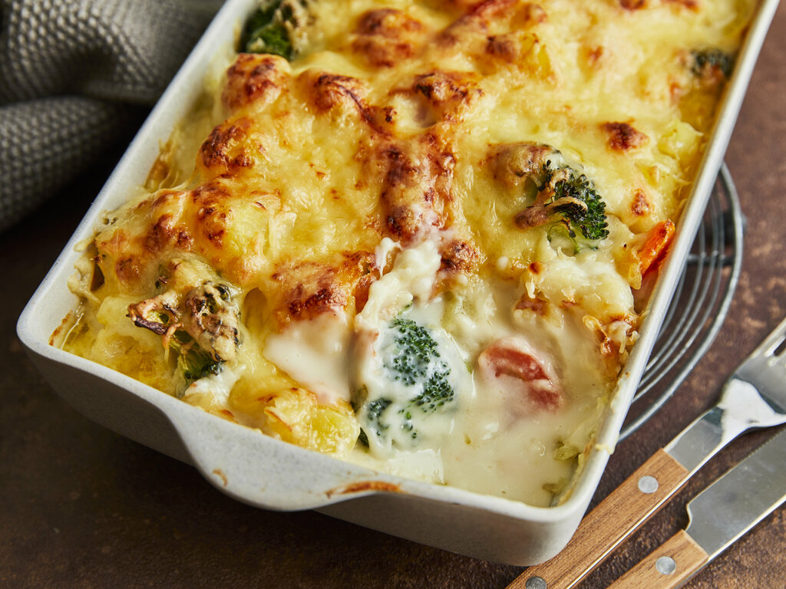

Kartoffel Auflauf

...mein Lieblingsgericht
Dieser lecker schmeckende Auflauf von meiner Freundin ist mein Lieblingsgericht
Er ist leicht zu machen und liegt nicht schwer im Magen
Ich könnte alles auf einmal essen
Folgende Zutaten sind notwendig:
- 1 Sack mehlige Kartoffeln
- 2 Rahmsoßen à 150ml
- 1 Brokkoli
- 2 Packungen Mozarella
- 2 Packungen MAGGI Kartoffelgartin
Die Zubereitung (mit ganz viel Liebe):
- Zuerst schälst du die Kartoffeln, schneidest diese klein und lässt sie kochen
- Danach bereites du das Gemüse vor
- Danach bereitest du die Soẞe vor
- Zu guter letzt kommt alles in eine Form und in den Ofen :D
- Wenn alles schön braun geworden ist, holst du es raus und ferfeinerst es mit gaaaanz viel Mozarella Käääse
Voila, du hast einen leckeren Kartoffel Auflauf gemacht (aber meine Freundin macht ihn besser)